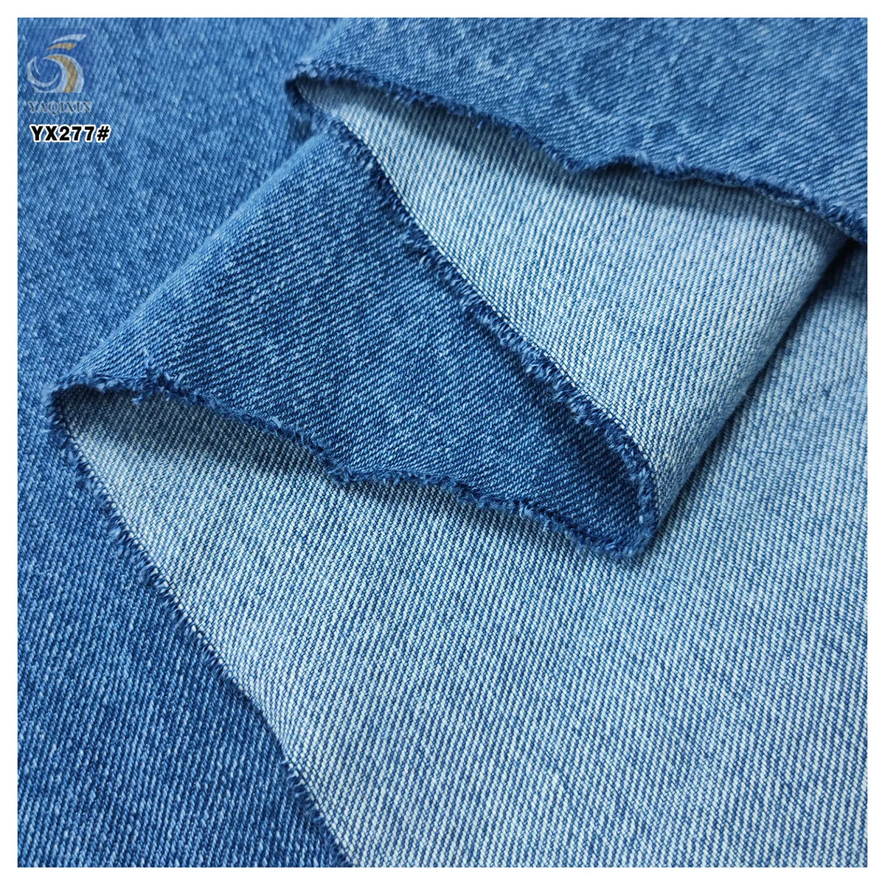

Fabric GSM is one of the fastest ways to compare material weight, but it is not a complete description of how a fabric will look or behave. For apparel buyers, the useful question is not simply “Is the GSM high or low?” It is “Does this weight, together with the construction, width and finish, suit the intended garment?”
A 160gsm fabric has a nominal mass of 160 grams for one square metre. Use GSM to compare weight within a clearly defined fabric route, then confirm composition, construction, usable width, stretch, finish and a physical sample. Do not assume that two fabrics with the same GSM will have the same drape, opacity or durability.
What fabric GSM means—and what it does not
GSM is short for grams per square metre. It expresses mass over area, so it gives buyers a common unit for comparing fabrics sold in different roll widths or length units. A listed 20gsm tulle is very light by area; a listed 270gsm Mikado has considerably more mass by area; a 460gsm denim is heavier again.
The number is valuable because descriptions such as “light”, “medium” and “heavy” are relative. GSM gives a measurable reference that can be recorded on a sample approval sheet and compared with the specification on a quotation or product page.
GSM does not identify the fibre, weave or knit, yarn size, stretch, finish, usable width or surface treatment. It also does not prove quality on its own. A well-made lightweight veil fabric and a well-made heavy denim serve different purposes; the higher number is not automatically the better product.
Read GSM together with construction and finish
Construction changes how a given amount of material is distributed. An open knitted mesh can have a low GSM and high transparency. A compact woven poplin at a higher GSM can feel smoother and provide more coverage. Satin may use its weight to create either fluid drape or firm structure depending on yarn, weave and finishing. Embroidery, sequins and beads can add substantial surface mass without turning the base into a dense plain fabric.
That is why cross-category comparisons need context. A 130gsm embroidered tulle and a 125gsm cotton poplin have similar numbers, yet the first has an open mesh base with raised decoration and the second is a compact woven shirting route. Their cutting, lining, seam and packing decisions are different.

Finish also changes the decision. A coating, foil, flocked surface, pleat, print or embroidery can affect hand feel, appearance and handling. If the surface treatment is part of the garment design, request the finished sample rather than approving the base fabric from GSM alone.
Compare current catalog examples by function
The table below uses current YAQIXIN product listings as concrete reference points. It is not a universal classification system, and the examples should not be treated as substitutes for sample approval. Their value is to show why buyers should read GSM inside the full product specification.
| Current catalog example | Listed weight and width | Construction context | What the buyer should evaluate |
|---|---|---|---|
| YX1046 nylon plain tulle | 20gsm / 160cm | Light knitted plain tulle | Transparency, softness, edge treatment and number of layers |
| A9188 cotton poplin | 125gsm / 155cm | Woven cotton poplin | Coverage, shirt or dress body, seam behavior and finish |
| YX693-2 matte satin | 160gsm / 150cm | Woven polyester satin with controlled sheen | Opacity, color cast, reflection, drape and handling marks |
| YX920 thickened Mikado satin | 270gsm / 150cm | 500D woven polyester Mikado | Firm body, fold definition, seam bulk and pressing response |
| YX277 cotton denim | 460gsm / 150cm | 7×7 woven cotton denim | Structure, cutting and seam bulk, garment weight and wash plan |
| YX1174 pearl beaded lace | 1000gsm / 140cm | Knitted base with heavy pearls, beads and sequins | Motif placement, support, packing, seam allowance and final garment weight |
Within a single family, GSM can help narrow the first sample request. Across different families, treat it as one field in a comparison rather than a ranking. The satin comparison guide shows this clearly: a lighter stretch-charmeuse route and a heavier Mikado route differ in function as well as weight.

Estimate fabric mass from GSM and width
GSM and width can provide a useful first estimate of material mass before packing. For a simple fabric measured in metres, use:
Example: 100 metres of a 160gsm fabric at 1.50 metres wide gives an estimated fabric mass of 24kg before the roll core, inner protection, outer packing and any measurement tolerance.
This calculation is a planning tool, not a shipping quotation. Use usable width if the goal is cutting yield, and confirm whether the supplier's stated width is nominal or usable. For embroidered, beaded, coated or otherwise complex materials, confirm how the listed GSM was measured and ask for the actual packed roll weight. Roll length, core, protective film, cartons and moisture can all affect the shipment figure.
When offers use different units, convert them before comparing. Record whether quantity is quoted in metres or yards and whether price is per metre, per yard, per kilogram or per roll. A clear unit prevents an apparently lower quotation from becoming a different commercial basis.
Use GSM during sample approval
A sample should carry the product code, composition, construction, listed GSM, usable width, color reference and date. If the material is revised, identify the new version instead of allowing two samples to circulate under one name. The approved sample and written specification should stay together.
Then test the sample in the intended garment context:
- For sheer and mesh fabrics: check transparency, layer count, edge stability and how the weight changes when gathered.
- For shirting and dress wovens: check coverage, drape, seam appearance, pressing response and comfort.
- For structured satin and denim: check fold definition, seam bulk, needle response and final garment weight.
- For embellished materials: check whether the GSM includes the decorative surface, then review motif security, backing, support and packing.

For a repeatable record, use the fabric sample inspection checklist. If your customer or destination market requires laboratory testing, define the standard, method and acceptance criteria separately; a catalog GSM value is not a test certificate.
Send a quote-ready GSM brief
A useful inquiry tells the supplier why the number matters. “Need 160gsm fabric” is still broad. “Need a matte woven satin around 160gsm for a lined formal dress, 150cm usable width, white color direction, initial sample quantity and delivery to Spain” gives the supplier a clearer route to confirm or correct.
Include these fields:
- garment or finished-product use;
- fabric family, composition and construction if known;
- target GSM or an approved sample reference;
- usable width and quantity with the exact unit;
- color, print, embroidery, coating or other finish;
- sample requirement, destination and required delivery date;
- tests or documentation required by the buyer or market.
If you are still selecting the fabric route, use the wholesale fabric sourcing guide to build the wider brief, then compare relevant items in the current product catalog. Final specifications, MOQ, packing and commercial terms should be confirmed for the exact product and order.
Buyer questions about fabric GSM
Does higher GSM mean better fabric?
No. Higher GSM means more mass per square metre, not automatically higher quality. The suitable weight depends on the construction, finish and intended garment. A lightweight tulle and a heavyweight denim solve different design problems.
Can two fabrics with the same GSM feel different?
Yes. Fibre, yarn, weave or knit, density, stretch and finishing can create different thickness, softness, drape and coverage at the same nominal weight. Compare physical samples under the same use conditions.
Is GSM enough to estimate shipping weight?
It can support a first material-mass estimate when width and length are known. Actual shipping weight also includes roll cores and packing, and complex finishes or embellishments may need an actual packed-roll confirmation.
Should I specify an exact GSM or a tolerance?
Start from the approved product or sample and ask the supplier what production tolerance applies. If a customer or technical requirement sets an acceptance range, include the test method and range in the approval documents instead of assuming one universal tolerance.
What should I confirm besides GSM?
Confirm composition, construction, usable width, color or finish, stretch, surface, intended use, sample identity, quantity unit, MOQ, packing and any required test or compliance document.
Ready to discuss a fabric brief?
Share your intended application, a reference image or swatch, quantity, and market. We can help you compare a stock or custom fabric route before you place a bulk order.
Start a fabric inquiry